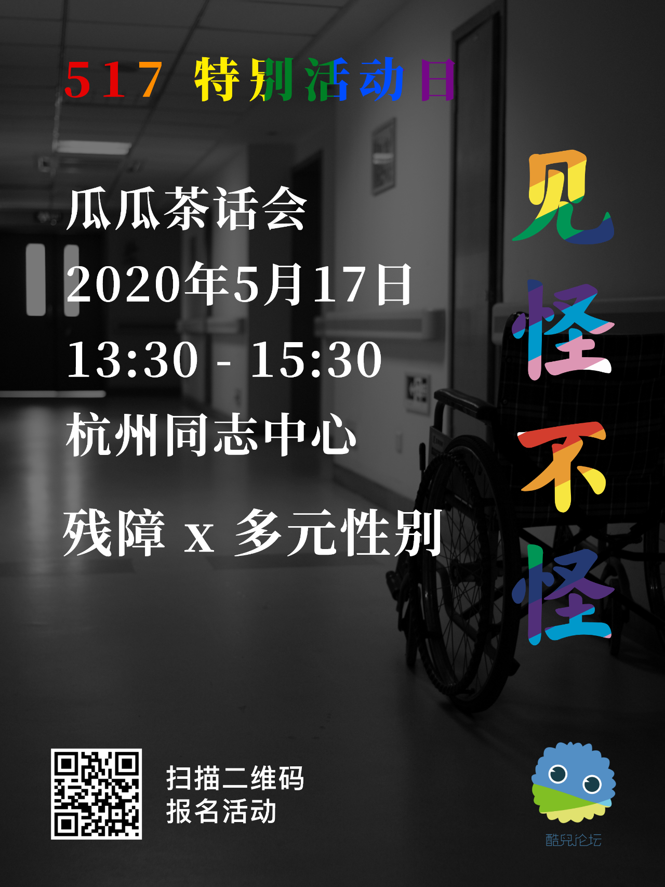
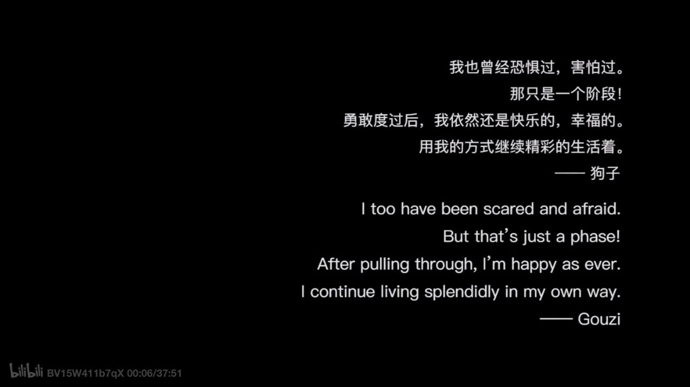
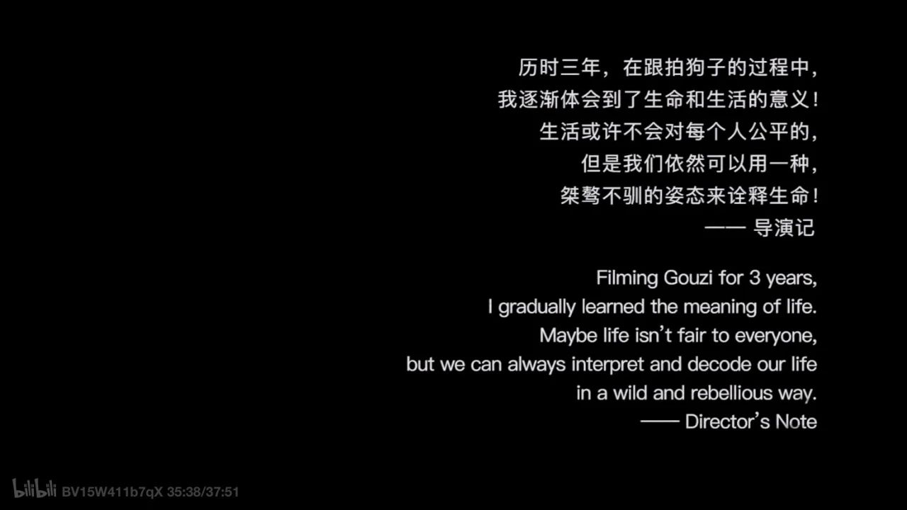

1990年5月17日，世界卫生组织（WHO）将同性恋从国际疾病与相关健康问题统计分类（ICD）中删除。每年的5月17日被定为国际不再恐同日（International Day against Homophobia, Transphobia, and Biphobia，简称IDAHOTB）。纪念日完整中文翻译为“国际不再恐惧同性恋、跨性别与双性恋日”，下文中均简称“国际不再恐同日”。今年的国际不再恐同日适逢星期天，酷儿论坛诚邀小伙伴参与我们的线下或线上活动，在这个特别的日子里，和我们一起共享属于我们的骄傲。2020年 5月17日 周日
国际不再恐同日 酷儿论坛活动一览
13:30 - 15:30 瓜瓜茶话会 杭州同志中心
16:00 - 17:30 冒刺手工坊 杭州同志中心
18:30 - 22:00 冒刺桌游🎴 杭州同志中心
19:00 - 20:50 冒刺观影会 线上直播平台

“狗子原本是一名非常优秀的女足运动员，但命运却在TA身上开了无数次的玩笑。在患罕见病的11年间，TA病危6次，瘫痪11次，失聪4次。但TA却用一种逗趣的生活态度野蛮生长着。同志，残障，爱情，亲情，生命以及活着，让TA不断寻找着真实的自己！”

这是B站关于短片《见怪不怪》的简介。这部由妖妖导演的残障拉拉电影，历时三年更拍，记录了狗子生活种一些“普普通通”的生活片段。例如，狗子一边抽着烟一边聊起因为生病让高温的天气有多么地难熬；出门需要对地点进行方方面面的考量，是否有好用的无障碍卫生间；狗子在家里做菜，和朋友出门，坐地铁，开车，康复……狗子抽着烟，反戴着棒球帽，一边不屑地说着脏话，一边“野蛮地生长”。

当残障与性少数的身份重叠，生活会有哪些变化？当5·17国际不再恐同日和全国助残日重合，让我们在茶话会一起来探讨关于人生的全新预想，探讨少数，重新出柜。活动开始前，我们将设置一些问题供参与者们简单地思考与探讨，之后进行37分钟的短片放映。放映结束后将进行本次茶话会的主题讨论。
活动信息
主持人：青雀 女权主义者，酷儿，治疗师，关注多元性别、残障、儿童等议题
时间：5月17日（周日）13:30-15:30
地点：杭州同志中心（公众号后台回复“幸福在哪里”获取位置）
活动费用：免费（不设茶歇，欢迎小伙伴自带零食饮料一起分享）
参与方式：扫描二维码或点击阅读原文报名
温馨提示
1. 本次茶话会为开放式讨论。请勿预设立场，请大家做到平等讨论，禁止歧视、攻击ta人。
2. 本次茶话会为免费活动，所以茶歇的预算较少，鼓励大家带零食酒水来与大家一起分享。
3. 由于情况特殊，线下活动存在因不可抗力而取消的可能性。如遇活动临时取消，我们会提前通过本公众号通知，敬请谅解。
4. 请参与活动的小伙伴自行评估健康情况，配合政府防疫措施，做好自我防护，并出示杭州健康码。
5. 杭州同志中心所在楼宇增设访客登记系统，请参与活动的小伙伴携带有效证件（中国居民身份证等）进入楼宇。